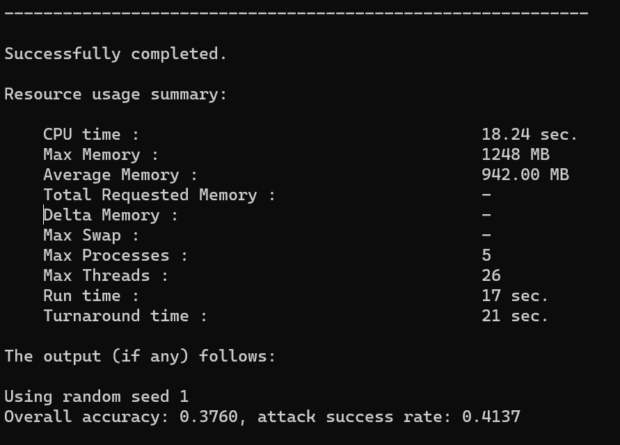

写在前面的话
挑战两天复现一篇论文开始！希望可以成功（虽然概率很小）
更新：最后用了三天，但是也远超预期了（当时觉得得至少五天），中间经历种种折磨，但最后的成就感也很足。
总体的步骤就是：
- 先进行网络的预训练。有八种选择（4 * 2），4是四种网络，2是干净数据和混合数据（具体含义见下文）。
- 产生攻击数据。有至少28种选择（4 * 7），4是四种数据集（1种干净数据和3种防御数据），7是7种攻击方式。同时
pertube攻击方式也要指定攻击的模型，因为此攻击方式是基于模型参数和梯度攻击的。 - 评估攻击效果。这里需要指定攻击数据的
.npz文件和攻击数据输入的模型（最好和前两步模型保持一致，模型选择第一步预训练好的模型，需要修改主目录的config文件中的.pth文件路径）。 - 运用防御策略。防御策略可以是基线防御，也可以是本文提出的三种防御方式。如果用的
ConvONet，这步得到的其实是防御数据，防御后的数据结果会保存在ConvONet-Opt中，便于后续评估使用。重要的是去查看子目录里的README.md，我一开始以为只有一个用户文档，这里当时花了至少半天时间自己配环境和coding，同门过来让我看看仓库，点进去才发现有子目录下的文档，被自己蠢哭了。 - 评估防御结果。需要指定输入的数据（第四步产生的防御数据），以及基准模型（因为
ConvONet只是一个隐函数网络，不含分割功能，需要把它加到指定的基准模型上）在输出日志中可以查看采用防御策略后的性能。
总结：不要急着复现，一定要多花时间先看懂论文，尤其是实验部分，另外多读仓库里的用户文档，也有助于少走弯路。
在主目录里的config.py里，注意每次做不同基线实验的时候需要修改所需的.pth文件的路径。
环境配置
首先登陆自己的服务器账号，到自己的项目目录下，然后使用scp命令把本地下好的IF-Defense文件夹上传至服务器：
ssh sdim-lihc@172.18.6.10 -p 18188
scp -r /本地/文件夹/路径 用户名@服务器地址:/目标/服务器/路径然后先创建一个专用的虚拟环境并激活：
conda create -n IF-Defense python=3.7
conda activate IF-Defense用pip把所有需要的包装上：
python -m pip install -r requirements.txt注意阅读 requirements.txt 里面被注释的部分，是需要自己安装的包，需要根据自己cuda的版本来进行安装。我的cuda版本是cuda11.8，去 pytorch 官网以及对应包的仓库下载对应版本的包即可。（pytorch 建议使用清华源进行安装，使用官网链接有时候慢的离谱）
清华源链接：Index of /anaconda/cloud/pytorch/ | 清华大学开源软件镜像站 | Tsinghua Open Source Mirror
rusty1s/pytorch_scatter: PyTorch Extension Library of Optimized Scatter Operations (github.com)
在装依赖的时候可能遇到一系列的问题，直接复制粘贴报错到谷歌或 gpt 即可，没有很难解决的报错。
项目结构
这个项目中的代码主要分为三个文件夹，每个文件夹都有一个详细的 README.md 文件，解释其用法。这里简要概述这个存储库的结构。
baselines/包含用于训练/测试受害者模型以及一些基线攻击和防御方法的代码。ONet/实现了IF-Defense的两个变体，ONet-Mesh和ONet-Opt。ConvONet/是IF-Defense的另一个变体（在大多数情况下也是最强大的），ConvONet-Opt。
可以进入每个文件夹查看代码的详细用法，下面将详细阐述各部分代码结构和用法。
baselines
这个文件夹包含了一些用于研究点云中的三维对抗攻击和防御的基本文件。作者实现了受害者模型的训练和测试，以及几种基线攻击和防御方法。这个代码库高度可扩展，我们可以根据需要轻松地添加更多的受害者模型架构、攻击和防御方法。
数据存储
为了简化数据加载的过程，作者将所有的数据（例如，点云、Ground Truth 标签、目标标签）都转换成了一个 Numpy npz 文件。例如，对于 ModelNet40 npz 文件 data/MN40_random_2048.npz，它包含以下数据：
train/test_pc：用于训练和测试的点云，形状为 [num_data, num_points, 3]。train/test_label：训练和测试数据的地面真实标签。target_label：用于有针对性攻击的预先指定目标标签。
数据准备
从这里下载用于训练、测试和攻击的点云数据—— wget 命令后跟下载链接即可。若出现错误也可以先下载到本地然后再使用 scp 命令传输。（注意每个人下载链接不同需要替换），然后解压缩到 data/ 目录下。
wget https://drive.usercontent.google.com/download?id=1o47ZvVcNvwBGv55xibEFw6KAOLaRF1IF
scp -r -P 18188 C:\Users\Lee\Downloads\data.tar.gz sdim-lihc@172.18.6.10:/work/sdim-lihc/3D_UDA/3D_UDA/IF-Defense/IF-Defense-main/baselines/data
tar -xzvf data.tar.gz经过一番操作后，data/下的目录结构应该是这样的：
MN40_random_2048.npz是随机采样的ModelNet40数据，每个点云有 2048 个点。attack_data.npz是所有攻击中使用的数据，其中仅包含测试数据，每个点云有 1024 个点，预先指定的目标标签也在其中。onet_remesh/onet_opt/convonet_opt-MN40_random_2048.npz是使用IF-Defense的三种变体从MN40_random_2048.npz中得到的防御数据。它们用于受害者模型的混合训练（见下文和论文的附录获取更多细节）
预训练的受害者模型pretrain/ 目录下。也可以自己训练受害者模型，并将其放入该文件夹：
scp -r -P 18188 C:\Users\Lee\Downloads\pretrain.tar.gz sdim-lihc@172.18.6.10:/work/sdim-lihc/3D_UDA/3D_UDA/IF-Defense/IF-Defense-main/baselines/pretrain
tar -xzvf pretrain.tar.gz注意，如果想使用自己的模型/权重，须修改 config.py 中名为 'BEST_WEIGHTS' 的变量。
使用方法
训练受害者模型
仓库提供了四种类型的受害者模型，PointNet、PointNet++、DGCNN 和 PointConv，其中 PointNet++ 和 PointConv 使用了 单尺度分组（SSG）。
在干净数据上训练
在随机采样的 ModelNet40 数据集上训练 Pointnet 模型：（我用的是学校的 lsf 作业调度平台，不同平台脚本的撰写方式可能有所不同）
#!/bin/bash //指定脚本的解释器为 bash
#BSUB -q 4a100-80 //指定作业所在队列的名称为 4a100-80
#BSUB -n 1 //指定作业需要的CPU核心数为1。
#BSUB -e train_victim_pointnet.err // 指定标准错误输出的文件名为 train_victim_pointnet.err
#BSUB -o train_victim_pointnet.log // 指定标准输出的文件名为 train_victim_pointnet.log
#BSUB -W 20:00 //指定作业的最大运行时间为20小时
#BSUB -R "span[ptile=1]" //指定每个节点上的作业只使用一个处理器（即一个 CPU 核心）
#BSUB -gpu "num=1/host" //指定作业需要使用的 GPU 数量为1，且只能在一个节点上运行
export CUDA_VISIBLE_DEVICES=0 //设置环境变量 CUDA_VISIBLE_DEVICES 为0，这会将第一个 GPU 分配给该作业
#将一行文本写入到 train_victim_pointnet.log 文件中，用于标识日志的开始。
echo "the log information of train_victim_pointnet.py" >> train_victim_pointnet.log
date >> train_victim_pointnet.log
module load python/anaconda3/2022.10
module load cuda/11.8
source activate
# conda init bash
conda activate IF-Defense
cd /work/sdim-lihc/3D_UDA/3D_UDA/IF-Defense/IF-Defense-main/baselines
python train.py --model=pointnet --num_points=1024这将使用Adam优化器对模型进行200个epochs的训练，学习率从1e-3开始，并使用余弦衰减到1e-5。
提供的预训练权重使用此命令的准确度略低于论文中报告的准确度。这是因为没有使用任何技巧（例如，在DGCNN的官方TensorFlow实现中使用标签平滑），并且是在随机抽样的点云上进行训练/测试，而一些官方实现是在最远点采样（FPS）抽样的点云上进行训练/测试。
结束后，可以在脚本中指定路径看到log，里面详细记录了每一次训练的学习率，各类损失，训练准确率和测试准确率。总共训练了200个epoch，每个epoch300步，且在第191个epoch时达到最高准确率0.8841，如图所示。
然后我们可以通过如下命令，寻找各次训练保存的模型和参数，在输出的路径中可以找到最佳的model的参数。
find /work/sdim-lihc/3D_UDA/3D_UDA/IF-Defense/IF-Defense-main -type f -name "*.pth"我这里的是model191_acc_0.8841_loss_0.0859_lr_0.000017.pth。在之后攻击脚本的model中就可以指定它为对应的模型。
混合训练
纯粹在干净数据上训练的受害者模型在IF-Defense防御数据上的准确度降低了最多5%（即执行train.py且指定dataset为防御数据），这对于一种防御来说是不可接受的。因此，这里将防御数据添加到原始数据中，实现简单的数据增强，以实现可忽略的性能降低：
CUDA_VISIBLE_DEVICES=0 python hybrid_train.py --model={$MODEL} --num_points=1024 --dataset={$DATASET} --def_data=path/to/defense_data.npz可以参考论文的附录以获取有关混合训练的更多详细信息。有关参数{$DATASET}的用法，参阅command.txt。
寻找文件位置（具体路径需要根据自己的文件位置确定）：
find /work/sdim-lihc/3D_UDA/3D_UDA/IF-Defense/IF-Defense-main -name "command.txt"对于三个command.txt的剖析，见本笔记的最后一个部分。
我编写的lsf脚本如下：
#!/bin/bash
#BSUB -q 4a100-80
#BSUB -n 1
#BSUB -e hybrid_train_victim_pointnet_conv_opt.err
#BSUB -o hybrid_train_victim_pointnet_conv_opt.log
#BSUB -W 20:00
#BSUB -R "span[ptile=1]"
#BSUB -gpu "num=1/host"
export CUDA_VISIBLE_DEVICES=0
echo "the log information of hybrid_train.py" >> hybrid_train_victim_pointnet_conv_opt.log
date >> hybrid_train_victim_pointnet_conv_opt.log
module load python/anaconda3/2022.10
module load cuda/11.8
source activate
# conda init bash
conda activate IF-Defense
cd /work/sdim-lihc/3D_UDA/3D_UDA/IF-Defense/IF-Defense-main/baselines
python hybrid_train.py --model=pointnet --num_points=1024 --dataset=conv_opt_mn40 --def_data=/work/sdim-lihc/3D_UDA/3D_UDA/IF-Defense/IF-Defense-main/baselines/data/convonet_opt-MN40_random_2048.npz结束后，可以在脚本中指定路径看到log，里面详细记录了每一次训练的学习率，各类损失，训练准确率和测试准确率。总共训练了200个epoch，每个epoch600步，且在第187个epoch时原始数据达到最高准确率0.8849（和上面就差0.0x个百分点，可以忽略），在第184个epoch时增强数据达到最高准确率0.8756，如图所示。
攻击（产生攻击数据）
本文实现了扰动**、添加点、添加聚类、**添加对象、kNN以及变种的FGM和Drop攻击。攻击脚本位于attack_scripts/文件夹中。除了Drop方法无法有针对性地攻击受害模型之外，都可以根据预先分配的固定目标标签执行有针对性的攻击。
攻击非常耗时（例如，在扰动方法中进行10步的二分搜索），因此可以使用PyTorch中的DistributedDataParallel提供的多GPU支持来加速这一过程。有关每种攻击方法的详细使用方法，仍然可以参阅command.txt。
NCCL_DEBUG=INFO CUDA_VISIBLE_DEVICES=0 python -m torch.distributed.launch --nproc_per_node=1 --master_port=29501 attack_scripts/targeted_perturb_attack.py --model={$MODEL} --num_points=1024 --dataset={$DATASET}下面是对train_victim_pointnet在干净数据上预训练得到的模型进行攻击的脚本：
#!/bin/bash
#BSUB -q 2a100-40
#BSUB -n 1
#BSUB -e attack_perturb_train_victim_pointnet.err
#BSUB -o attack_perturb_train_victim_pointnet.log
#BSUB -W 20:00
#BSUB -R "span[ptile=1]"
#BSUB -gpu "num=1/host"
export NCCL_DEBUG=INFO
export CUDA_VISIBLE_DEVICES=0
echo "the log information of targeted_perturb_attack.py" >> attack_perturb_train_victim_pointnet.log
date >> attack_perturb_train_victim_pointnet.log
module load python/anaconda3/2022.10
module load cuda/11.8
source activate
# conda init bash
conda activate IF-Defense
cd /work/sdim-lihc/3D_UDA/3D_UDA/IF-Defense/IF-Defense-main/baselines
python -m torch.distributed.run --nproc_per_node=1 --master_port=29501 attack_scripts/targeted_perturb_attack.py --model=pointnet --num_points=1024 --dataset=mn40下面是对hybrid_train_victim_pointnet_conv_opt在加强后的防御数据上预训练得到的模型进行攻击的脚本：
#!/bin/bash
#BSUB -q 2a100-40
#BSUB -n 1
#BSUB -e attack_perturb_hybrid_train_victim_pointnet_conv_opt.err
#BSUB -o attack_perturb_hybrid_train_victim_pointnet_conv_opt.log
#BSUB -W 20:00
#BSUB -R "span[ptile=1]"
#BSUB -gpu "num=1/host"
export NCCL_DEBUG=INFO
export CUDA_VISIBLE_DEVICES=0
echo "the log information of targeted_perturb_attack.py" >> attack_perturb_hybrid_train_victim_pointnet_conv_opt.log
date >> attack_perturb_hybrid_train_victim_pointnet_conv_opt.log
module load python/anaconda3/2022.10
module load cuda/11.8
source activate
# conda init bash
conda activate IF-Defense
cd /work/sdim-lihc/3D_UDA/3D_UDA/IF-Defense/IF-Defense-main/baselines
python -m torch.distributed.run --nproc_per_node=1 --master_port=29501 attack_scripts/targeted_perturb_attack.py --model=pointnet --num_points=1024 --dataset=conv_opt_mn40攻击代码有很多地方踩坑，列举如下：
- 由于我们需要攻击已经经过干净数据和增强的防御数据预训练后得到的模型，所以需要将
config.py中的pointnet模型路径变更为对应文件存放位置，才能正确加载需要的模型，否则攻击的还是未经训练的模型，得到的结果还是错误的。注意路径撰写方式，如图所示：
- 文中使用了
python的分布式跑代码，而大家的gpu序号各有不同，作者的序号是从-1开始的，而我们的是从0开始的，因此需要去对应的攻击文件中将local_rank的default值改为自己第一个序号的值，否则便会报错error: unrecognized arguments: --local-rank=xx，如图所示：
- 若是你的
torch版本较高，那么还需要把执行命令中的torch.distribution.launch换成torch.distriution.run。
基线防御（区别于本文的防御）
本文也给出了SRS、SOR和DUP-Net防御。要应用一种防御，只需运行以下命令（本地）：
CUDA_VISIBLE_DEVICES=0 python defend_npz.py --data_root=path/to/adv_data.npz --defense=srs/sor/dup/''但是我们暂时不用，因为使用本文的防御方法得到的防御数据已经存放在了pretrain文件夹中，如图所示：
防御结果仍然会保存为一个NumPy npz文件，保存在与adv_data相同的目录中。
评估攻击结果
使用 inference.py 测试攻击/防御的性能：
CUDA_VISIBLE_DEVICES=0 python inference.py --num_points=1024 --mode=normal/target --model={$MODEL} --normalize_pc=True/False --dataset={$DATASET} --data_root=path/to/test_data.npz例如，评估分别对在干净数据和conv_opt_mn40的防御数据上预训练后攻击得到的结果，lsf文件如下：
#!/bin/bash
#BSUB -q 2a100-40
#BSUB -n 1
#BSUB -e evaluate_attack_perturb_train_victim_pointnet.err
#BSUB -o evaluate_attack_perturb_train_victim_pointnet.log
#BSUB -W 20:00
#BSUB -R "span[ptile=1]"
#BSUB -gpu "num=1/host"
export CUDA_VISIBLE_DEVICES=0
echo "the log information of inference.py" >> evaluate_attack_perturb_train_victim_pointnet.log
date >> evaluate_attack_perturb_train_victim_pointnet.log
module load python/anaconda3/2022.10
module load cuda/11.8
source activate
# conda init bash
conda activate IF-Defense
cd /work/sdim-lihc/3D_UDA/3D_UDA/IF-Defense/IF-Defense-main/baselines
python inference.py --num_points=1024 --mode=target --model=pointnet --normalize_pc=True --dataset=mn40 --data_root=/work/sdim-lihc/3D_UDA/3D_UDA/IF-Defense/IF-Defense-main/baselines/attack/results/mn40_1024/Perturb/Perturb-pointnet-logits_kappa=0.0-success_1.0000-rank_0.npz#!/bin/bash
#BSUB -q 2a100-40
#BSUB -n 1
#BSUB -e evaluate_attack_perturb_hybrid_train_victim_pointnet_conv_opt.err
#BSUB -o evaluate_attack_perturb_hybrid_train_victim_pointnet_conv_opt.log
#BSUB -W 20:00
#BSUB -R "span[ptile=1]"
#BSUB -gpu "num=1/host"
export CUDA_VISIBLE_DEVICES=0
echo "the log information of inference.py" >> evaluate_attack_perturb_hybrid_train_victim_pointnet_conv_opt.log
date >> evaluate_attack_perturb_hybrid_train_victim_pointnet_conv_opt.log
module load python/anaconda3/2022.10
module load cuda/11.8
source activate
# conda init bash
conda activate IF-Defense
cd /work/sdim-lihc/3D_UDA/3D_UDA/IF-Defense/IF-Defense-main/baselines
python inference.py --num_points=1024 --mode=target --model=pointnet --normalize_pc=True --dataset=conv_opt_mn40 --data_root=/work/sdim-lihc/3D_UDA/3D_UDA/IF-Defense/IF-Defense-main/baselines/attack/results/conv_opt_mn40_1024/Perturb/Perturb-pointnet-logits_kappa=0.0-success_1.0000-rank_0.npz使用lsf文件时，文件路径需要更改，根据报错来就行，这里不再列举。干净数据下的攻击成功率和准确率如图所示：

conv_opt_mn40的增强数据下的攻击成功率和准确率如图所示：
这里为什么输入的数据里有防御数据，准确率仍然很低？原因是这里的增强数据包括了原始数据和防御数据，性能会被受原始数据很大的影响（一颗老鼠屎搅坏一锅汤）。
参考 command.txt 获取有关不同参数的详细信息。
本文防御（产生防御数据）
在根目录下的ConvONet/command.txt中可以查阅具体防御的使用方法，使用命令行是这样的：
CUDA_VISIBLE_DEVICES=0 python opt_defense.py --sample_npoint=1024 --train=False --rep_weight=500.0 --data_root=path/to/adv_data.npz其中npz文件需要自行替换。
分别对受攻击后的增强数据和干净数据进行防御，lsf脚本如下所示：
#!/bin/bash
#BSUB -q 4a100-80
#BSUB -n 1
#BSUB -e defense_attack_perturb_train_victim_pointnet.err
#BSUB -o defense_attack_perturb_train_victim_pointnet.log
#BSUB -W 20:00
#BSUB -R "span[ptile=1]"
#BSUB -gpu "num=1/host"
export CUDA_VISIBLE_DEVICES=0
echo "the log information of inference.py" >> defense_attack_perturb_train_victim_pointnet.log
date >> defense_attack_perturb_train_victim_pointnet.log
module load python/anaconda3/2022.10
module load cuda/11.8
source activate
conda init bash
conda activate IF-Defense
cd /work/sdim-lihc/3D_UDA/3D_UDA/IF-Defense/IF-Defense-main/ConvONet
python opt_defense.py --sample_npoint=1024 --train=False --rep_weight=500.0 --data_root=/work/sdim-lihc/3D_UDA/3D_UDA/IF-Defense/IF-Defense-main/baselines/attack/results/mn40_1024/Perturb/Perturb-pointnet-logits_kappa=0.0-success_1.0000-rank_0.npz#!/bin/bash
#BSUB -q 4a100-40
#BSUB -n 1
#BSUB -e defense_attack_perturb_hybrid_train_victim_pointnet_conv_opt.err
#BSUB -o defense_attack_perturb_hybrid_train_victim_pointnet_conv_opt.log
#BSUB -W 20:00
#BSUB -R "span[ptile=1]"
#BSUB -gpu "num=1/host"
export CUDA_VISIBLE_DEVICES=0
echo "the log information of opt_defense.py" >> defense_attack_perturb_hybrid_train_victim_pointnet_conv_opt.log
date >> defense_attack_perturb_hybrid_train_victim_pointnet_conv_opt.log
module load python/anaconda3/2022.10
module load cuda/11.8
source activate
# conda init bash
conda activate IF-Defense
cd /work/sdim-lihc/3D_UDA/3D_UDA/IF-Defense/IF-Defense-main/ConvONet
python opt_defense.py --sample_npoint=1024 --train=False --rep_weight=500.0 --data_root=/work/sdim-lihc/3D_UDA/3D_UDA/IF-Defense/IF-Defense-main/baselines/attack/results/conv_opt_mn40_1024/Perturb/Perturb-pointnet-logits_kappa=0.0-success_1.0000-rank_0.npz评估防御结果
分别对应用ConvONet后的防御数据进行评估，需要指定基线网络和防御数据，.lsf脚本如下所示：
#!/bin/bash
#BSUB -q 4a100-80
#BSUB -n 1
#BSUB -e evaluate_defense_attack_perturb_train_victim_pointnet.err
#BSUB -o evaluate_defense_attack_perturb_train_victim_pointnet.log
#BSUB -W 20:00
#BSUB -R "span[ptile=1]"
#BSUB -gpu "num=1/host"
export CUDA_VISIBLE_DEVICES=0
echo "the log information of inference.py" >> evaluate_defense_attack_perturb_train_victim_pointnet.log
date >> evaluate_defense_attack_perturb_train_victim_pointnet.log
module load python/anaconda3/2022.10
module load cuda/11.8
source activate
# conda init bash
conda activate IF-Defense
cd /work/sdim-lihc/3D_UDA/3D_UDA/IF-Defense/IF-Defense-main/baselines
python inference.py --num_points=1024 --mode=target --model=pointnet --normalize_pc=True --dataset=mn40 --data_root=/work/sdim-lihc/3D_UDA/3D_UDA/IF-Defense/IF-Defense-main/baselines/attack/results/mn40_1024/Perturb/ConvONet-Opt/convonet_opt-Perturb-pointnet-logits_kappa=0.0-success_1.0000-rank_0.npz#!/bin/bash
#BSUB -q 4a100-40
#BSUB -n 1
#BSUB -e evaluate_defense_attack_perturb_hybrid_train_victim_pointnet_conv_opt.err
#BSUB -o evaluate_defense_attack_perturb_hybrid_train_victim_pointnet_conv_opt.log
#BSUB -W 20:00
#BSUB -R "span[ptile=1]"
#BSUB -gpu "num=1/host"
export CUDA_VISIBLE_DEVICES=0
echo "the log information of inference.py" >> evaluate_defense_attack_perturb_hybrid_train_victim_pointnet_conv_opt.log
date >> evaluate_defense_attack_perturb_hybrid_train_victim_pointnet_conv_opt.log
module load python/anaconda3/2022.10
module load cuda/11.8
source activate
# conda init bash
conda activate IF-Defense
cd /work/sdim-lihc/3D_UDA/3D_UDA/IF-Defense/IF-Defense-main/baselines
python inference.py --num_points=1024 --mode=target --model=pointnet --normalize_pc=True --dataset=mn40 --data_root=/work/sdim-lihc/3D_UDA/3D_UDA/IF-Defense/IF-Defense-main/baselines/attack/results/conv_opt_mn40_1024/Perturb/ConvONet-Opt/convonet_opt-Perturb-pointnet-logits_kappa=0.0-success_1.0000-rank_0.npz两种情况下的防御结果如图所示：
直接对干净数据和增强数据进行防御（此时防御成为新的“攻击”）
这步是为了验证在没有攻击的情况下在干净数据上加防御，性能会下降5个百分点，而用了增强数据后，性能下降变少的观点，结果在下一节中呈现。.lsf脚本如下：（我们不再对增强数据进行防御，因为这个数据已经是经过防御的预训练数据，在下一步直接用于评估即可）
#!/bin/bash
#BSUB -q 4a100-40
#BSUB -n 1
#BSUB -e defense_train.err
#BSUB -o defense_train.log
#BSUB -W 20:00
#BSUB -R "span[ptile=1]"
#BSUB -gpu "num=1/host"
export CUDA_VISIBLE_DEVICES=0
echo "the log information of inference.py" >> defense_train.log
date >> defense_train.log
module load python/anaconda3/2022.10
module load cuda/11.8
source activate
conda init bash
conda activate IF-Defense
cd /work/sdim-lihc/3D_UDA/3D_UDA/IF-Defense/IF-Defense-main/ConvONet
python opt_defense.py --sample_npoint=1024 --train=False --rep_weight=500.0 --data_root=/work/sdim-lihc/3D_UDA/3D_UDA/IF-Defense/IF-Defense-main/baselines/data/MN40_random_2048.npz评估无攻击下的防御结果
分别评估上一节的两个结果，.lsf脚本如下：
#!/bin/bash
#BSUB -q 4a100-40
#BSUB -n 1
#BSUB -e evaluate_defense_train.err
#BSUB -o evaluate_defense_train.log
#BSUB -W 20:00
#BSUB -R "span[ptile=1]"
#BSUB -gpu "num=1/host"
export CUDA_VISIBLE_DEVICES=0
echo "the log information of inference.py" >> evaluate_defense_train.log
date >> evaluate_defense_train.log
module load python/anaconda3/2022.10
module load cuda/11.8
source activate
# conda init bash
conda activate IF-Defense
cd /work/sdim-lihc/3D_UDA/3D_UDA/IF-Defense/IF-Defense-main/baselines
python inference.py --num_points=1024 --mode=normal --model=pointnet --normalize_pc=True --dataset=mn40 --data_root=/work/sdim-lihc/3D_UDA/3D_UDA/IF-Defense/IF-Defense-main/baselines/data/ConvONet-Opt/convonet_opt-MN40_random_2048.npz#!/bin/bash
#BSUB -q 4a100-40
#BSUB -n 1
#BSUB -e evaluate_defense_hybrid_train.err
#BSUB -o evaluate_defense_hybrid_train.log
#BSUB -W 20:00
#BSUB -R "span[ptile=1]"
#BSUB -gpu "num=1/host"
export CUDA_VISIBLE_DEVICES=0
echo "the log information of inference.py" >> evaluate_defense_hybrid_train.log
date >> evaluate_defense_hybrid_train.log
module load python/anaconda3/2022.10
module load cuda/11.8
source activate
# conda init bash
conda activate IF-Defense
cd /work/sdim-lihc/3D_UDA/3D_UDA/IF-Defense/IF-Defense-main/baselines
python inference.py --num_points=1024 --mode=normal --model=pointnet --normalize_pc=True --dataset=conv_opt_mn40 --data_root=/work/sdim-lihc/3D_UDA/3D_UDA/IF-Defense/IF-Defense-main/baselines/data/convonet_opt-MN40_random_2048.npz
#注意这的npz数据位置！在干净数据和增强数据直接运用防御后的准确率如下图所示：
通过前后对比我们可以看到：
- 在干净数据上攻击后的性能要比在增强数据上攻击后的性能低6个百分点左右（
0.3760 vs 0.4319），说明增强数据对攻击的抵御性更好； - 在上面邻近的两张图中可以看到，干净数据和增强数据经历了同一种攻击，输入同一种网络，运用同一种防御策略后，性能仅相差不到0.1个百分点（
0.8663 vs 0.8655），但是，若没有攻击的情况下，直接采用防御策略，此时防御策略反而会变成一种“攻击”，使得性能下降。原文中提到直接对干净数据进行防御，性能会下降最多5%，从上图可以看出，实际上是下降了2%左右（0.8841 - 0.8655），而直接对混合数据进行防御，性能甚至0.01个百分点都没有下降（本文第五张图和上面的图都显示为0.8756），而这个数字即使相对于干净数据的0.8655（实际因机子不同，可能会更低），也要低1%左右。因此，这个实验验证了数据增强的必要性。
名词解释及 command.txt 的分析
Numpy npz 文件
Numpy npz文件是指 NumPy 的压缩文件格式。NumPy 是 Python 中用于科学计算的一个库，它提供了多维数组对象以及用于处理这些数组的函数。npz 文件是 NumPy中 用于保存多个 NumPy数组的压缩文件格式，通常用于存储多个相关的数据数组。在这个项目中，npz 文件被用来存储点云数据、Ground Truth标签等信息，以便于加载和处理。
关于 baseline 中的 command.txt 的剖析
在纯净数据上训练受害模型
本文提供了四个受害模型：pointnet、pointnet2、dgcnn、pointconv
我们需要在命令中指定要训练的受害模型替代{$MODEL}部分。注意这里的dataset默认使用的是mn40，因为是在干净数据上训练，所以不能胡乱修改所使用的数据集。
CUDA_VISIBLE_DEVICES=0 python train.py --model={$MODEL} --num_points=1024对IF-Defense中使用的受害模型进行混合训练
我们需要在命令中指定要训练的受害模型、数据集名称和数据经过防御后的路径。
我们对纯净数据和防御数据（而不是对抗数据，因此这不是对抗性训练！）进行模型训练，可以参考论文附录了解混合训练的更多细节；
$DATASET 应该是 '{$METHOD}_mn40'，例如 remesh_mn40、opt_mn40、conv_opt_mn40 然后，这些权重将用作评估IF-Defense时的受害模型。
CUDA_VISIBLE_DEVICES=0 python hybrid_train.py --model={$MODEL} --num_points=1024 --dataset={$DATASET} --def_data=path/to/defense_data.npz- 纯净数据（clean data）：指的是没有任何攻击或干扰的原始数据，通常是用于模型训练和测试的标准数据集，用于评估模型在正常情况下的性能。
- 防御数据（defense data）：指的是经过某种防御方法处理过的数据。在这种情况下，模型在纯净数据上训练，然后对该数据进行某种防御方法的处理（经过防御模块后后续再输入网络，但因为没有攻击情况下防御手段本身就是一种微弱的数据污染，造成前文中提到的），以增强模型对特定攻击的抵抗能力。防御数据通常用于评估模型在受到特定攻击时的性能。
- 对抗数据（adversarial data）：指的是经过特定攻击（如对抗性攻击）处理过的数据，旨在欺骗或误导模型以产生错误的预测结果。对抗数据通常用于评估模型在受到对抗性攻击时的鲁棒性和抵抗能力。
在所提到的训练过程中，模型同时在纯净数据和防御数据上进行训练，以提高模型对于特定攻击的抵抗能力，但并没有使用对抗数据进行训练，因此这不是对抗性训练。
评估模型准确率/攻击成功率
需要指定要测试的受害模型、测试模式、数据集和测试数据的路径；正常模式下报告准确率，而目标模式下报告准确率和攻击成功率。在测试对抗点云时，不需要设置 --normalize_pc=True。
CUDA_VISIBLE_DEVICES=0 python inference.py --num_points=1024 --mode=normal/target --model={$MODEL} --normalize_pc=True/False --dataset={$DATASET} --data_root=path/to/test_data.npz执行攻击的文件在 attack_scripts/ 中
文章提供了 7 种攻击的 PyTorch 实现： Perturb、Add（Point）、Add Cluster/Object（未在论文中使用）、kNN、Drop 以及 FGM 的变体（未在论文中使用） 这些攻击（除了 Dropping）非常耗时，因为它们使用 CW 攻击框架，需要多步二分搜索， FGM 需要多次优化步骤。
为了加速攻击过程，本文使用了 PyTorch 中提供的多 GPU 支持 DistributedDataParallel 我们需要分配 GPU 索引，--nproc_per_node={$NUM_GPU_USED} 和一个唯一的 master_port。
攻击结束后，每个进程（GPU）生成的 adv 数据将分别存储为 npz 文件，我们需要运行一个合并命令将它们合并成一个 npz 文件。
Perturb（我们工作就是Perturb所以暂时只记录此攻击方法，后续工作若是用到再补充）
我们需要在命令中指定受害模型和数据集名称，数据集将指定您要攻击的受害模型权重。
例如，如果想尝试 ConvONet-Opt，则可以设置 $DATASET=conv_opt_mn40 进行攻击，然后进行防御。
NCCL_DEBUG=INFO CUDA_VISIBLE_DEVICES=0 python -m torch.distributed.launch --nproc_per_node=1 --master_port=29501 attack_scripts/targeted_perturb_attack.py --model={$MODEL} --num_points=1024 --dataset={$DATASET}合并被攻击的 npz 文件
不同进程生成的被攻击的数据将存储为： 'xxx/{$attack_method}-{$victim_model}-success_{$success_rate}-rank_{$process_rank}.npz' 我们需要使用此命令将它们合并成一个 npz 文件：
python util/merge_attack_results.py --data_root='xxx/{$attack_method}-{$victim_model}-success_'然后，我们将每个 npz 文件中的被攻击数据、Ground Truth 和目标标签连接起来，还会对攻击成功率进行求和，分布式 npz 文件将被删除，只剩下最新的一个。
基线防御
我们需要在命令中指定要应用的防御方法，如果未指定，将应用所有三种方法。
CUDA_VISIBLE_DEVICES=0 python defend_npz.py --data_root=path/to/adv_data.npz --defense=srs/sor/dup/''一条完整的复现路线到此结束！若需要其他复现思路，在本条路线上进行微调即可。